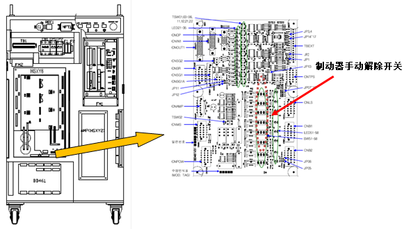
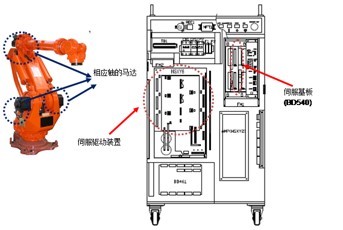

位置(速度)偏差大于设定值。由伺服控制执行的机器人动作中，移动命令位置和实际位置之间的差异过大时，伺服板在伺服运算中感知错误并停止机器人。
1. 请确认发生错误的轴是否与其他设备有机械性干涉。
有机器人的机构性干涉或冲突时，可能会发生此错误。超出限制区域时应通过手动操作将机器人移动到安全区域。
2. 请确认制动器解除是否正常工作。
可能是因该轴制动器的解除功能有问题或制动解除电压出现异常所致。
1) 检查个别轴的制动器解除是否有异常
拆除马达电源后(马达OFF)，请用制动器手动开关来确认该轴的制动器是否正常解除。解除制动器时，可通过从马达发出的声音来确认。

3. 请检查配线状态。
请确认马达接线(U、 V、 W相)是否与其他电线或接地线(FG)短路。
4. 请确认是否使用额定负荷。
若包括作业物在内整体重量超过额定负荷，请参考该机器人的规格书把负荷调整为额定负荷以内。
5. 位置偏差设定等级错误。
位置偏差设定值小于以下测量值，请调高设定值。
使其好多次循环运行后的位置偏差测量值x1.5
6. 请更换其它配件。
请按伺服基板(BD540/1) à 伺服驱动装置 à 马达的顺序更换并确认错误是否发生。
